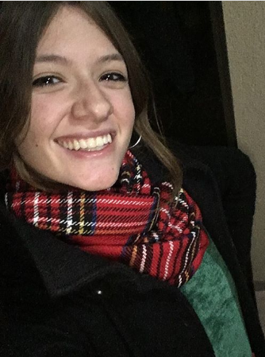

<div id="whoIm" class="card border-0 mb-3 col-10 offset-1" style="background-color: transparent;">
	<div class="row">
		
		<div class="col-sm-12 col-md-8" style="color:black">
		    <h1 class="card-title" style="width: 100%; text-align: center;"><i>Lavín, Iara Melina</i></h1>
		    <h3 class="card-title" style="width: 100%; text-align: center;"><i>Manicurista</i></h3>
			<p class="card-text">
				Estudié en <a href="https://institutosiap.com/">Instituto Argentino de Peluquería y belleza (IAP)</a> de General Pico para ser profesional en el ámbito de la manicuria. 
				<br> Decidí especializarme en éste área, debido a que me gusta aportar en el cuidado de las manos y uñas, las cuáles son una de las partes más importantes del cuerpo a la hora de construir nuestra presentación, es decir, es una demostración de como queremos vernos y proyectarnos al mundo.
		    </p>
		</div>
	</div>
</div>


<!-- ESTILO DE LA IMAGEN CIRCULAR
style=" position:static; width:100%; height:100%; display: inline-block; background: url(../src/profilepic.jpeg); background-position: 50% 50%;background-size: cover; border-radius: 50%;" -->